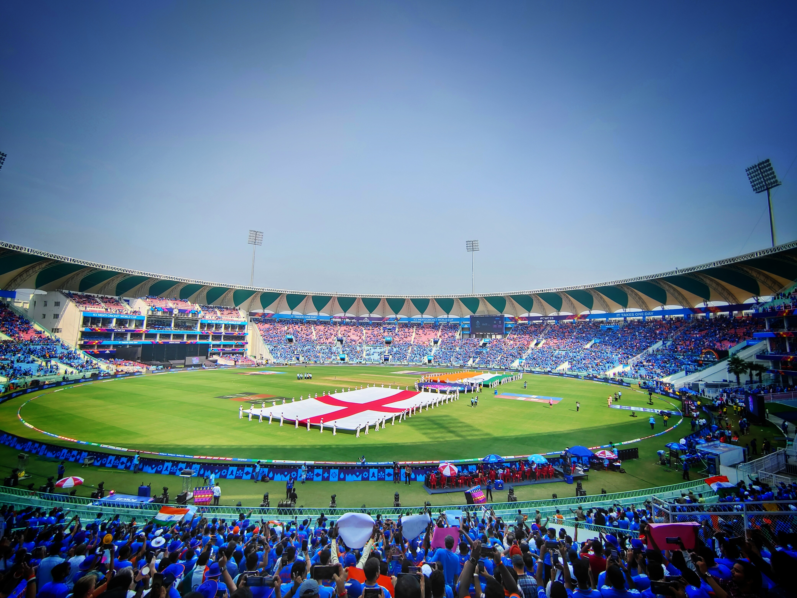
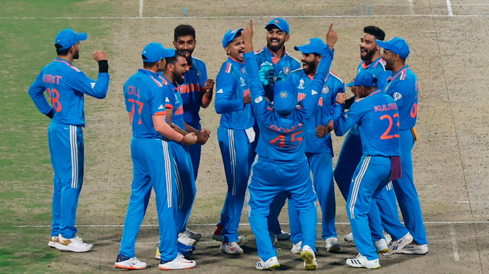
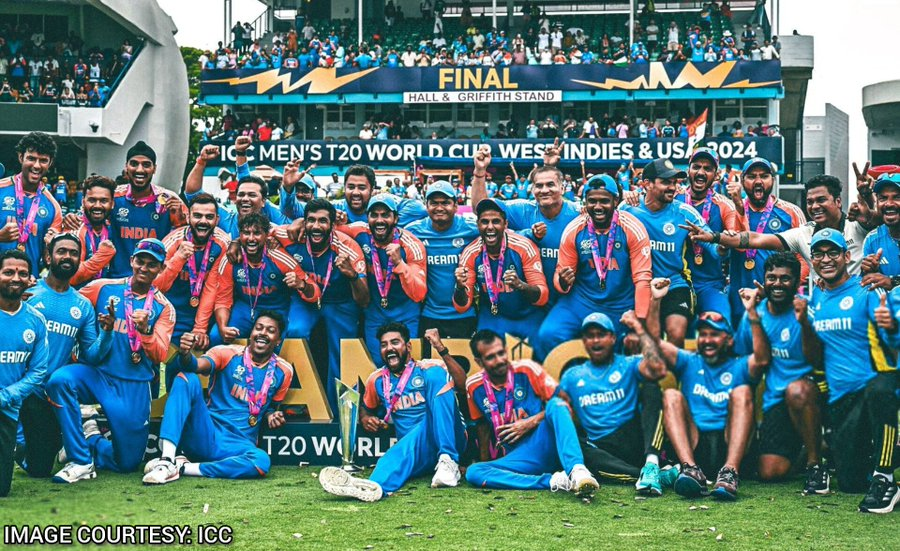

Welcome to my Country, India, where cricket is not just a sport, cricket is the heartbeat of billions of people. Hi, I'm Ayush Singh Aryan, a software Engineer, who loves to watch cricket. In this blog, I will go through the journey of World Cup 2023, my stadium experience, the heartbreak of billions of people on 19th November, and finally, the 2024 T20 World Cup champions, i hope you enjoy this journey.
I watched the India vs England live match in Lucknow. The fully packed stadium, and the noise of buzz, whistles, and light shows are just unbelievable. India vs England was my first international 50-over match experience that I watched in the stadium. When the national anthem played in the stadium all 50 thousand people stood up and sang the national anthem This was a goosebumps moment.
India started slow but with Rohit Sharma's master-class batting India gave a 230 score to England. Then in the second innings, Mohammed Shami and Bumarah's master class bowled out England under 129 and the light show added the cherry on the cake.
The 2023 World Cup is being hosted in India, and India is considered the favorite to win because of the trend of the home team winning the 50-over World Cup.
However, India only lost one match in the 2023 World Cup, in the final against Australia. During the final game, India could not defend 240 runs, leading to heartbreak for fans worldwide.
This is the first time that India has not started the World Cup as favorites. India began their World Cup campaign in New York where the pitches were not good, after qualifying for the Super 8, India went to West Indies where they played the semi-final against England, and the final against South Africa .
Most people do not believe how India defended 28 of 29, but master class Bumrah, Hardik, and Arshdeep Singh successfully defended the run and India lifted the T20 World Cup after 17 years, this also the end of the t20 career of the two giants of the game Virat Kohli and Rohit Sharma.
Hi, I'm Ayush Singh Aryan, a Software Engineer and I created this blog to share my love and experience for the beautiful game of cricket.
As a cricket fan, I love to watch and play this sport, this game gives you most days bad and some good, and those good days bring happiness to billions of people in the country. In India cricket is played on almost every small street, land, road, etc.
This blog allowed me to connect with cricket lover, who watches this sport no matter how many bad days. India wins an ICC trophy after 11 years, in between five final heartbreaks, but in the end, it gives so much joy and happiness to billions of people, I hope you enjoy this Blog.